Sudarsan Polymers, established in 2000 by A. Babu in Srivilliputtur, is a leading manufacturer of PP woven fabrics and sacks. Sudarsan Polymers stands out as a pioneering force in the manufacturing sector, specializing primarily in the production of high-quality PP woven fabrics and sacks. Rooted in a culture of unwavering commitment to excellence and innovation, the company operates within cutting-edge facilities equipped with advanced technologies, ensuring that every product bearing the Sudarsan Polymers name is synonymous with superior quality. At the core of Sudarsan Polymers' ethos lies a deep-seated dedication to sustainability.By prioritizing sustainability, the company not only aims to meet but exceed customer expectations, while also making a positive impact on the communities they serve. Sudarsan Polymers boasts an extensive product line comprising meticulously designed PP woven fabrics and sacks tailored to meet the diverse needs of various industries.Leveraging cutting-edge manufacturing capabilities, Sudarsan Polymers consistently delivers superior products that seamlessly adapt to the evolving needs of their customers. By championing the values of quality, innovation, and sustainability, Sudarsan Polymers extends an invitation to others to join them in their journey towards forging a brighter, more sustainable future. Their vision transcends mere business objectives, encompassing a broader aspiration to positively contribute to both society and the environment.
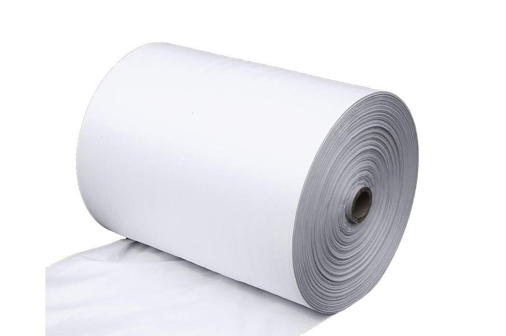
About our company
SUDARSAN POLYMERS


 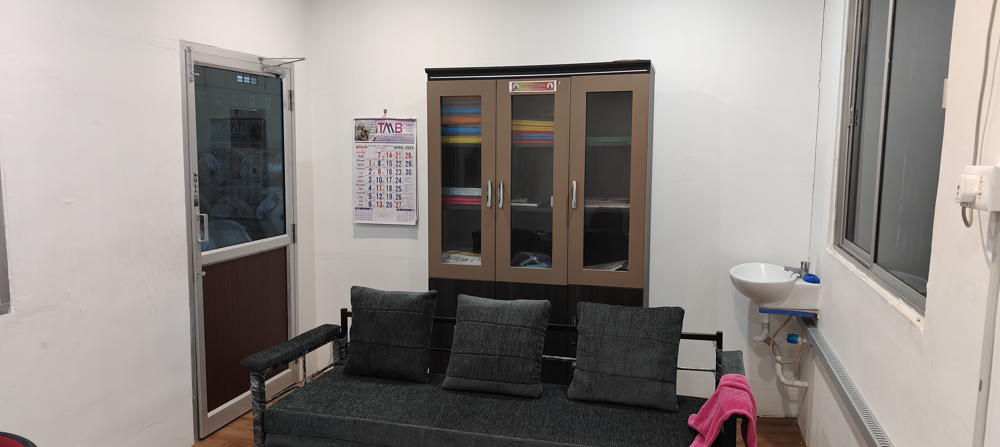
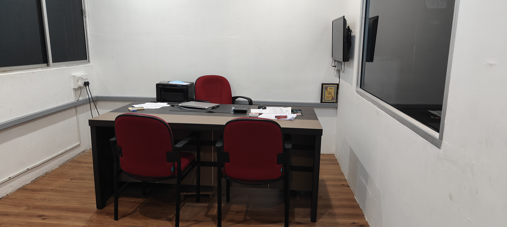
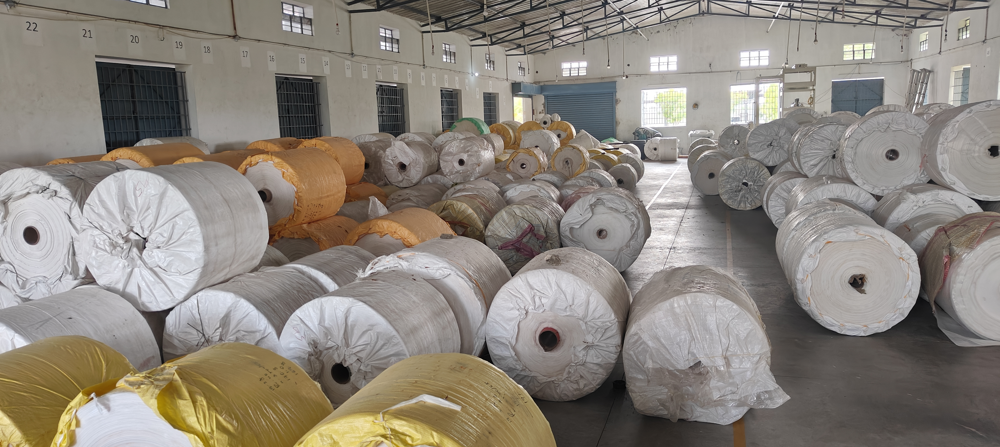
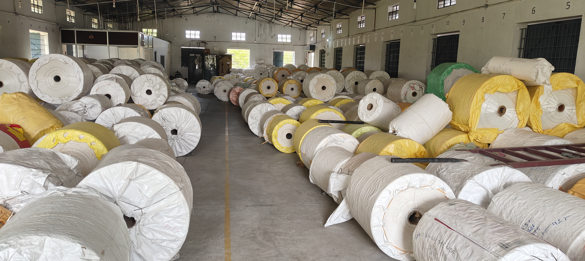
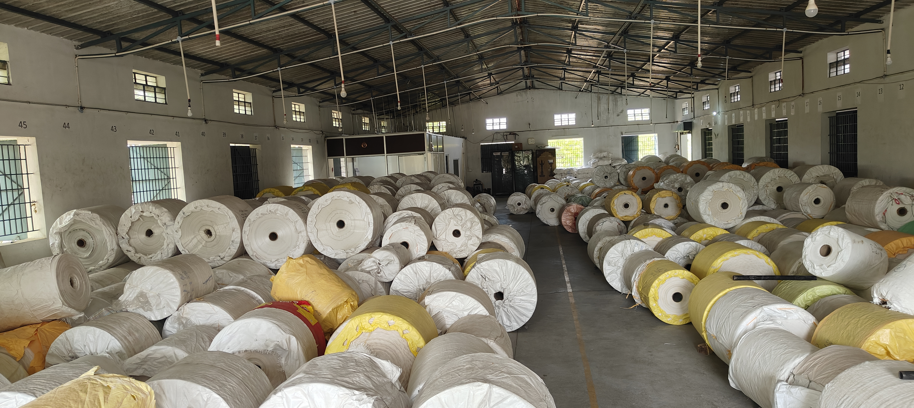
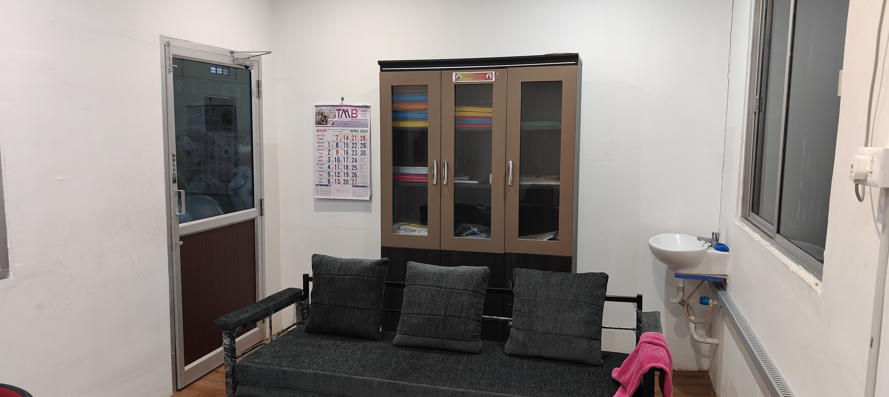
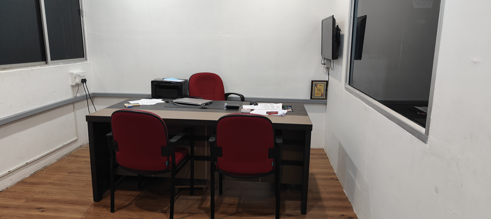
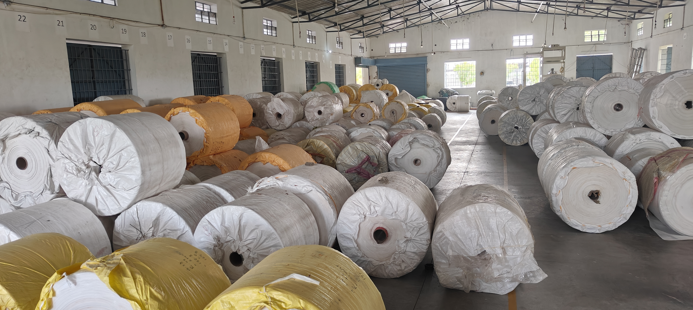
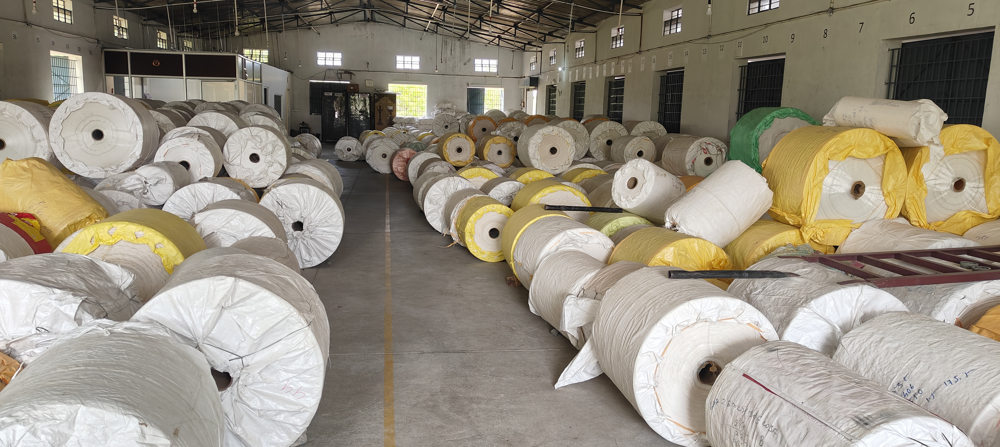
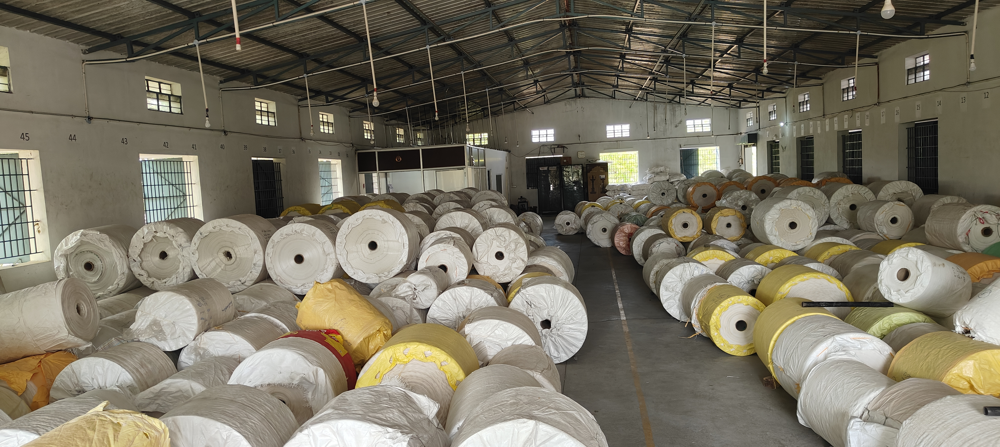